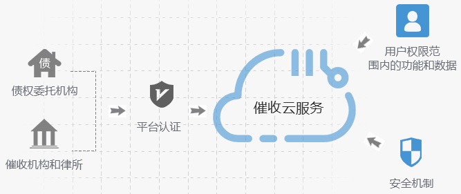

首页
关于我们
公司介绍
公司大事件
知识产权
信息安全
合作伙伴
科技赋能
我们的服务
招贤纳士
联系我们
首页
关于我们
公司介绍
公司大事件
知识产权
信息安全
合作伙伴
科技赋能
我们的服务
招贤纳士
联系我们
我们的服务
OUR SERVICES
数据分析服务
DATA ANALYSIS SERVICES
首航数据分析团队的技术积累来自多年国外发达市场的先进经验，同时也来自长期对中国市场以及相关管理 流程的深刻理解。
首航数据分析团队的技术积累来自多年国外发达市场的先进经验，同时也来自长期对中国市场以及相关管理 流程的深刻理解。
系统开发实施服务
SYSTEM DEVELOPMENT AND IMPLEMENTION SERSIVE
首航以专业的软件开发技术和项目管理方法为基础，能够深刻理解客户的需求，快速、有效地 为客户提供高质量的软件项目外包服务。
首航目前在贷前授信申请、贷中额度管理、贷后催收、风控决策、征信变量加工等领域具积累了深厚的系统开发经验。 首航能够站在行业高度对系统架构进行统一规划， 设计开发满足当前业务需求的应用系统，同时能以业务预期发展来指导IT规划，使系统建设满足未来若干年的发展需要。
催收云服务
COLLECTION OF CLOUD SERVICES
首航开发的不良资产处置平台是以SaaS云服务方式提供一站式催收服务。该平台主要有两类用户，一类是债权委托机构，另一类是催收机构和律所。这两类机构用户在 平台注册认证后，通过云服务提供的功能简单配置和部署后即可享受平台提供的相应服务。平台具备严格的安全机制，确保不同机构只能访问本机构和用户权限范 围内的功能和数据。
合规作业：通过平台成熟的作业流程，有效保障催收业务安全、规范的进行。
高效管理：自定义最优策略，实现灵活、高效的案件分配机制，提高催收工作效率
节约成本：企业无需自行搭建和维护系统，即可快速配置和部署适合本企业的催收作业平台。

信贷业务云服务
CLOUD SERVICE OF CREDIT BUSINESS
首航开发的信贷业务综合服务平台以SaaS云服务方式为中小信贷机构提供一站式信贷业务管理。信贷机构只需要租用平台提供的服务，即可快速构建一套符合监管要求和自 身需求的轻量级信贷业务系统，平台提供包括申请进件、授信审批、风控决策、贷后催收等多个业务模块，对信贷业务生命周期的各个环节进行管理。 这种服务租用的模式，使信贷机构避免在系统开发建设、系统维护和服务器资源方面投入过高成本，帮助信贷机构更专注于自身业务，快速开展相关业务，更有效的 做好风险管理和客户服务工作。使用这项服务，为中小信贷机构、催收机构实现了如下效益：
合规作业：通过平台成熟的作业流程，有效保障催收业务安全、规范的进行。
高效管理：自定义最优策略，实现灵活、高效的案件分配机制，提高催收工作效率
节约成本：企业无需自行搭建和维护系统，即可快速配置和部署适合本企业的催收作业平台。
合作案例
COOPERATION CASES
某国有银行--建设银行
基于北京首航申请评分的自动审批体系，包括授信策略和额度策略，建立反欺诈规则，优化业务流程
审批通过率提高了12.3%，风险调整后的收益率提高了35%，同时，违约率降低了2.48%
审批成本降低了52.9%，同时，申请欺诈发生率降低了33%
建立了新的、更加有效的欺诈防范策略和自动审批体系
某商业银行--民生银行
自由北京首航负责开发申请阶段风险、收入、反欺诈、授信策略、初始额度的评分卡上线后：
提升了民生银行信用卡中心申请阶段风险管理的能力和水平，量化风险。
提高决策一致性，提高工作效率。
提高申请阶段额度管理策略开发的科学性。
某消费金融公司--中银消费
北京首航为其建立向前延伸到网点的前端申请、后端征信审批、额度授信的系统。 提供中途授信、一般贷款等消费金融特色业务提供网上多种申请途径的处理
有效进行审批环节和额度管理的风险控制及操作一致性。
提高业务人员工作效率，提升产量。优化业务环节，缩短决策周期。
某城商银行--华夏银行
在北京首航消费金融信贷整体技术支持和7X24运营支持下，运营、审批效率获得大幅提升：
提高业务人员工作效率，提升产量。优化业务环节，缩短决策周期。
系统决策有效进行审批环节和额度管理的风险控制及操作一致性。
提升前端授信和后端账户管理的客服质量。
通过额度调整有效提高额度使用，控制风险，优化客户价值
某金融机构
成功开发实施申请审批处理系统，实现贷前借款人资料审核、系统自动决策、人工审批流程一体化，大大提升了授信审批效率， 规范了作业流程，加强了风险控制。
某金融机构
成功开发实施消费信贷核心业务系统，实现了对客户、账户和交易级账务数据的高效处理， 同时提供了产品差异化定价机制，帮助该机构实现数百万笔放款交易，获取大量优质借款客户。
某金融机构
成功开发实施催收管理系统，通过灵活的案件分配机制、智能的催收策略、以及及时准确的监控统计报告， 帮助该机构规范了作业流程，对拖欠客户有效进行分群 ，排队和催收资源分配，达到最大程度的收回欠款，提升了催收效率和催收效果。